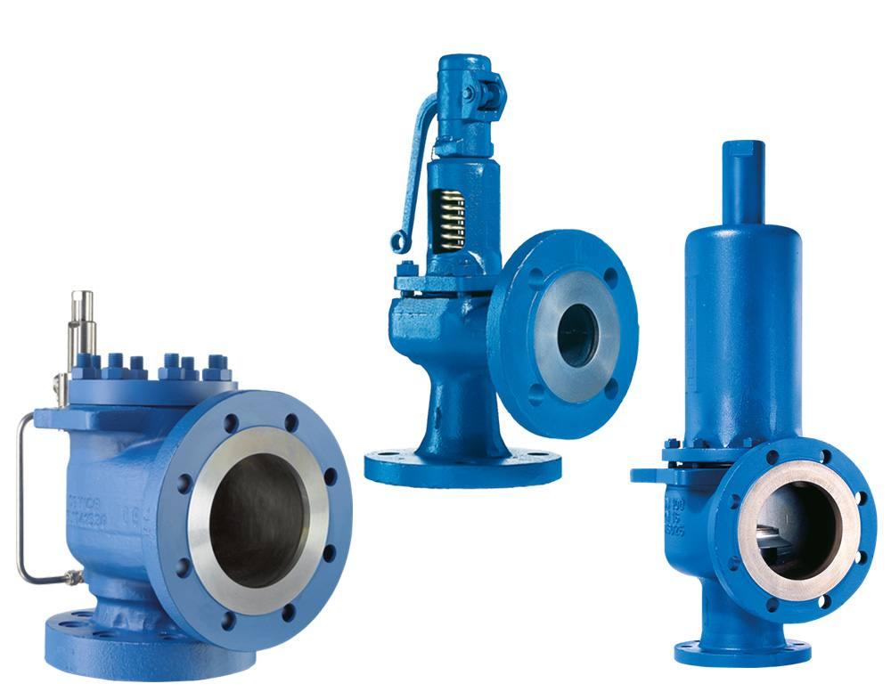
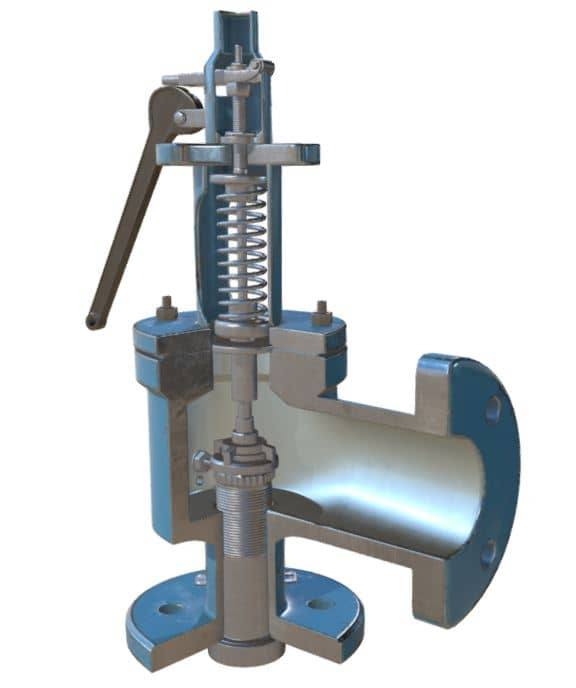
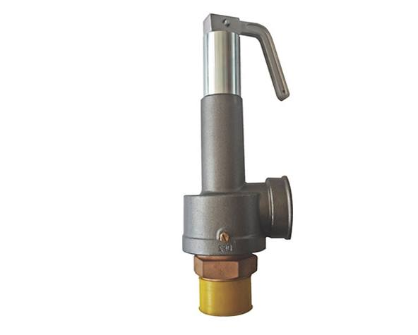

Safety Valves & Pressure Relief Valves — Manufacturer & Supplier
Safety and relief valves are automatic pressure-protection devices that open to relieve excess pressure and protect pressure vessels, boilers and piping systems from overpressure damage. Navjivan Valves supplies spring-loaded and pilot-operated safety relief valves, including Forbes Marshall safety relief valves (FMSRV).

Product Overview
A safety or relief valve opens automatically once system pressure exceeds a pre-set value, discharging fluid to relieve the excess pressure, then re-closes once pressure returns to a safe level. These valves are a critical last line of defence in boiler, steam, compressed air and process systems, and are typically selected, sized and certified in line with the pressure vessel or boiler code applicable to the installation.
Types of Safety & Relief Valves

Spring-Loaded Safety Valves
Use a calibrated spring to hold the valve disc closed until system pressure exceeds the set pressure, opening automatically to relieve excess pressure — the most common safety valve design for steam and general process use.

Pilot-Operated Safety Valves
Use a small pilot valve to control the opening of a larger main valve, offering tight seating up to the set pressure and often preferred for larger relieving capacities or where tight operating margins are required.

Forbes Marshall Safety Relief Valves (FMSRV)
A recognised safety relief valve range supplied by Navjivan Valves for steam and process pressure-protection applications.
Specifications
| Function | Automatic overpressure protection for boilers, vessels and piping |
|---|---|
| Operation | Spring-loaded or pilot-operated, fully automatic |
| Typical Service | Steam, air, gas and process fluids |
| Brand Available | Forbes Marshall Safety Relief Valve (FMSRV) |
Specifications reflect the products currently supplied by Navjivan Valves. Exact availability may vary by size and material — please confirm with our team for your specific requirement.
Applications
- Boilers & Steam Systems
- Pressure Vessels
- Power Generation
- Process Piping
- Compressed Air Systems
- Petrochemical Plants
Materials of Construction
Safety and relief valves are available in body materials and set-pressure ranges selected to match the fluid, pressure system and applicable code requirements of the installation.
Key Features
- Automatic, code-driven overpressure protection with no manual intervention
- Spring-loaded designs suited to general steam and process protection duty
- Pilot-operated designs for tighter seating margins and larger capacities
- Recognised Forbes Marshall FMSRV range available through Navjivan Valves